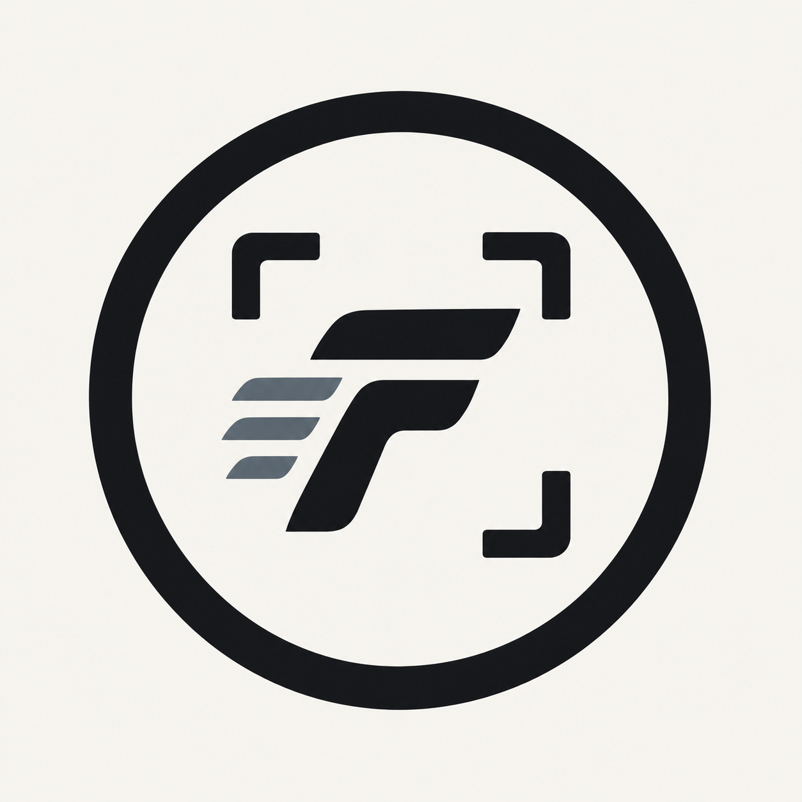

Dostarczasz nagranie
Wysyłasz pełny mecz z VEO, telefonu lub innej kamery.

FRAMEBALLMateriały meczowe dla zawodników
Z pełnego nagrania wyciągamy Twoje akcje i zamieniamy je w gotowy materiał. Możesz wysłać mecz z VEO albo wybrać Player Cam — kamerę prowadzoną tylko za Tobą.
ZAWODNIK
01 / IDEA
Pełne nagranie pokazuje mecz. Frameball pokazuje zawodnika — jego decyzje, pojedynki, podania, odbiory i momenty, które warto zachować.
02 / PROCES
Wysyłasz pełny mecz z VEO, telefonu lub innej kamery.
Podajesz numer, pozycję i informacje, które pomagają odnaleźć Cię na boisku.
Przeglądamy materiał i zbieramy wszystkie istotne momenty zawodnika.
Highlight, osobne akcje i krótkie formaty dopasowane do wybranego pakietu.
PLAYER CAM / WARSZAWA
Nie nagrywamy całej drużyny. Prowadzimy aparat za jednym zawodnikiem, dzięki czemu materiał pokazuje również grę bez piłki, ustawienie i poruszanie się.
03 / OFERTA
Ceny startowe. Zakres potwierdzamy przed rozpoczęciem realizacji.
349 zł
Masz pełne nagranie meczu. My wyciągamy z niego Twoją grę.
od 649 zł
Przyjeżdżamy na mecz i prowadzimy kamerę za jednym zawodnikiem.
999 zł
Regularny materiał zawodnika z czterech dostarczonych spotkań.
DLA AKADEMII
04 / FORMATY
Najważniejsze akcje zawodnika w jednym uporządkowanym filmie.
Klipy gotowe do archiwum, wysłania albo dalszego wykorzystania.
Krótkie materiały dopasowane do ekranu telefonu.
05 / FAQ
Możesz przesłać link do VEO, Dysku Google lub innego miejsca z pełnym materiałem.
Nie. Wystarczy numer koszulki i pozycja. Jeśli masz znaczniki czasu, mogą przyspieszyć realizację.
Aparat śledzi jednego wybranego zawodnika, a nie pełny obraz spotkania ani całą drużynę.
Tak. Akademia może przekazywać własne nagrania i wybierać zawodników do przygotowania materiałów.
FRAMEBALL / KONTAKT
Napisz, jaki materiał posiadasz, podaj numer zawodnika i wybierz pakiet.
Napisz na Instagramie ↗